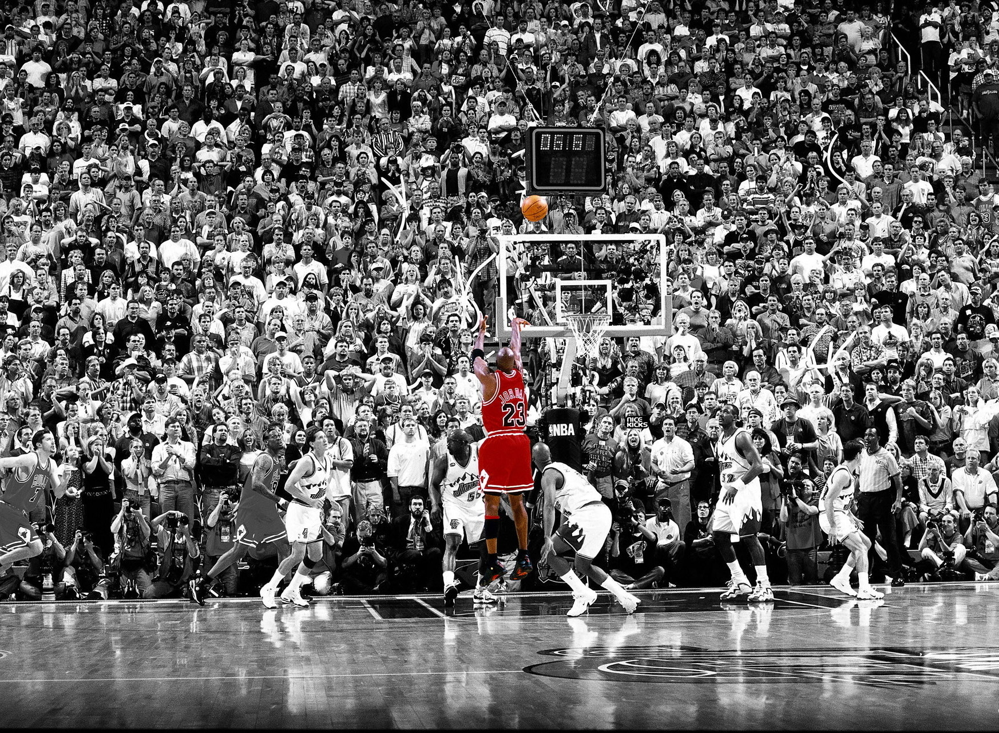

Jazbaat-The Dramatics Club is - the dramatics society of Pandit Dwarka Prasad Mishra Indian Institute of Information Technology Design and Manufaturing, Jabalpur. Jazbaat is one of the most recognized teams in the country. Over the years, Jazbaat has performed street plays on topics like ‘Inequality’, ‘Mercy killing’, ‘Sexism’,‘Culture Loss’, ‘Political Consciousness’, ‘Religious Fanaticism’. These plays have created mass awareness and received multiple awards and accolades.

Cultural Clubs
Jazbaat-The Dramatics Club
Saaz-The Music Club
'Saaz' by definition means a musical instrument. We believe that music is not only some notes and bits, it is made up of feelings of hearts. SAAZ is not an event, it is not three or four conveners who arrange some events, it is a group of people who play or sing good indian stuff, or those who just love listening to indian music. It is a club in which people meet and enjoy Indian music let their feelings out from their heart and express it through music. The club is proud of the diverse forms of music that it portrays including classical, semi-classical, ghazals, folk, fusion, light vocals, indi pop and various instrumentals.
Abhivyakti-The Arts Club
When creativity meets passion, design happens. Design is thoughts given shape; to put together the pieces of a puzzle, not knowing of what would unfold. Have an idea? Give it shape and bring it into existence; scribble it out or express yourself digitally. The Design Club came into existence last year, with the motive of creating a culture of design in the institute. The amazing response we got has encouraged us to go further and expand across the genres, to have infrastructure set aside for enthusiastic people.
Samvad-Literary & Quizing
Samvaad is one of the most active, entertaining and intellectually stimulating clubs in the institute, with a healthy mixture of formal (meaning you probably stand to get prize money) and informal (meaning you get chocolates instead!) events held quite frequently. We host a range of events like Quizzes, Creative Writing, Rebuses, Word Games, Scrabble, Scavenger Hunts, Treasure Hunts and Pot-pourri (dumb charades and other fun games). Freshies will always be welcomed into any and every event - just drop by with a pen in hand.
Avartan-The Music Club
Dance is a synonym of expression of life,the expression is pure fun and learning.InSync,the dance club of IIIT Jabalpur provides you with ample opportunities to move up the dancing ladder.Be it inter-hostel competitions,workshops,performance showcases or professional stages;InSync brings in excitement with every forthcoming event.So,what are you waiting for? Unleash your dancing experience being part of one of the most awesome club in the institute.

Technical Clubs
ROBOTICS CLUB
History taught us this lesson - once in a while some invention comes up and that changes the fate of the planet forever. One such thing is a Robot. However, robots have failed to live up to the predictions of the 1950s and 60s, when it was widely thought by scientists as well as the public that we would have intelligent robots as butlers, companions or co-workers by now.
Gather all the wires and metals, for this is your chance to build awesome robots.
ELECTRONICS CLUB
We, Electronics Section, delineate a cluster of engineering maniacs, where we mold the ideas into reality and envision a better society guided by innovation and advancements that we design. Project Areas we deal with: --> Internet of Things --> Networks --> Control Systems --> Embedded Systems --> Power Electronics --> Signal & Image Processing --> Artificial Intelligence Our mission is to acquaint and assist students towards different features of next generation electronics to hone their skills for the helm of technological development.
PHOTOGRAPHY CLUB
The Photography Club of IIIT Jabalpur which is a diverse club of amateurs with mobile cameras to professionals with DSLRs who contribute to world renowned magazines. You will find these crazies at odd nook and corners of the campus, at unexpected times shooting sunset in the lakeside or making light graffitis in the dark night or playing with lights in the photography studio.
WEBIX CLUB
Webix club is one of the most active technical club of IIIDM Jabalpur.It aims to provide basics of web development ot students and generates interest.Every year the student of webix club are responsible for the websites of the various fest organised here at IIITD Jabalpur
PROGRAMMING CLUB
Meet computer programmers. Share ideas, advice and experiences with others to improve your skills! Learn new languages and techniques.The club organise several events,workshops and coding camps!!
ASTRONOMY CLUB
Astronomy is fun, but it can be even more fun when you do it with other people. Sky & Telescope encourages you to contact your local astronomy club, where you'll find like-minded enthusiasts eager to share their knowledge and love of the sky with you. Club meetings offer opportunities to try out new equipment, learn new techniques, and make new friends. They are one of the best resources around for developing your skills and passion for astronomy.
BUSINESS AND MANAGEMENT CLUB
The Club's Vision:
AUTOMOTIVE AND FABRICATION CLUB
The club's vision: To enhance and facilitate the education of auto mechanics to individuals who have an interest in the automotive industry; to expand the interest of Automotive Technology to students; to network, socialize, make new friends, and have a positive voice on campus; to share our automotive interest with the public and fellow students through various automotive events, gatherings, and meetings.

Sports Club
BASKETBALL CLUB
Since its inception, the Tennis Club of IIIT Jabalpur has been a hub for Basketball enthusiasts. The purpose of the club is to conduct various events such as camps and tournaments along with fun events like screenings of matches etc. Looking for competition, social play, team camaraderie, a good workout, quality time with friends, tournaments exposure? Basketball Club of IIIT Jabalpur will strive to provide you with all this and more!
FOOTBALL CLUB
Our very own ronaldinho's and ronaldo's slog it out daily in the extremely well maintained football field with flood light facilities. The football field borders the cricket field. The students are provided with the gear by the institute and the experienced coaches provide the necessary guidance for students to improve their skills.
ATHLETICS
The club aims at the general health and fitness of the students, along with preparing them for competitions. The students are put through efficient training routines under the guidance of experienced coaches. The routines generally include gymming, drills and basic yoga. We provide a very friendly and supportive environment in which you can develop your skills to the fullest. If athletics is your passion then this is the place to be!!!
VOLLEYBALL CLUB
It is for all the Volleyball enthusiastic junta of IIIT Jabalpur. It has been one of the most active clubs handling the most actively pursued sport in the institute. It has organized a wide range of events with the primary objective of promoting the sport and bringing together all Volleyball enthusiastic junta.
CHESS CLUB
Chess is a two-player board game played on a chessboard, a checkered gameboard with 64 squares arranged in an eight-by-eight grid. Chess is played by millions of people worldwide, both amateurs and professionals.
The club aims to provide exposure and increase IQ by playing against other students.
TENNIS CLUB
Tennis is a racket sport that can be played individually against a single opponent (singles) or between two teams of two players each (doubles). Each player uses a tennis racket that is strung with cord to strike a hollow rubber ball covered with felt over or around a net and into the opponent's court. The object of the game is to play the ball in such a way that the opponent is not able to play a valid return. The player who is unable to return the ball will not gain a point, while the opposite player will.
BADMINTON CLUB
For all badminton loving folks of IIIT Jabalpur. It has been one of the most active clubs handling the most active sport in the institute. With promotion of Badminton as its true motive, it has organised a wide range of events and won gold medal in Gusto'16. Headed by the Badminton Coordinator and driven by the conveners, Badminton Club will be one of the most happeing clubs of the year.
TABLE TENNIS CLUB
The Institute has tennis hall, to the hall at the UG Students club to the tables provided in various hostels. The indoor hall is for the practice of the institute team whereas the tables at UG and hostels are for the other students.
CARROM CLUB
Carrom (also known as Karrom) is a "strike and pocket" table game of Eastern origin similar to billiards and table shuffleboard. It is found throughout the East under different names though most non-eastern people know it by the East Asian name of Carroms (or Karrom). It is very popular in Nepal, India, Pakistan, Bangladesh, Sri Lanka and surrounding areas and in the Middle East as well. In South Asia, many clubs and cafés hold regular tournaments. Carrom is very commonly played by families, including the children, and at social functions. Different standards and rules exist in different areas.
CRICKET CLUB
For all Cricket players in the institute, this club is a must have and enthusiasm is the only requisite. It has been one of the most active clubs handling the most active sport in the institute. It has organised a wide range of events with the primary objective of promoting the sport and bringing together all Cricket lovers. This year its gonna be bigger and better. Headed by the Cricket Coordinator and driven by the conveners, Table Tennis Club promises fun to everyone who is a part of it. Let's take the game to a higher level.